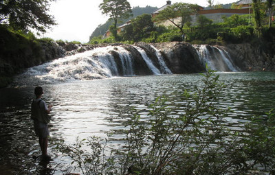

父の釣り口伝
アユ釣りの夏に その１ わが町の振草川漁業協同組合の黎明期
いいか、アユ釣りっていうことになると、そもそもここの川にアユがおったかおらんかっちゅうことから話が始まる、な。
アユはおっただ昔から、天竜から遡って。ただし、今の蔦の淵、あそこまでしかいなかった。（注：蔦の淵は東栄町市場の下流にある滝で、岩盤の成り立ちによって大きく落差になったところで魚は絶対に遡上できなかった。）

左側の斜面は、その昔、はるばる天竜川から遡上してきた
アユが越えられるようにダイナマイトで岩盤を砕いて作った魚道
ほれで、当時は、友釣りなんていうことはねえ、ものの本によるとちょんまげ時代に伊豆の何とかいうところのお坊様が考えたんだってことを言うけれども、ここでもほとんどの人が知らずに、まぁどうだか偶然捕まえたってぐらいのものだったんだそうだ。
ほれで、うちの五十五郎おじいっていうおじいさん（肇の祖父）は、そりゃ身上つぶすぐらいだし道楽だし金持ちだもんで、友釣りをやっとったそうだよ。
－－友釣りをか？
うん。それを、今みたいなアユ釣りになってきたのは、東大のなんとかいう魚の先生が、琵琶湖のアユが小さいんだと、それが川に遡れば大きくなるんだと、おかしいじゃないかって研究してみたところが、琵琶湖では餌が足りないんだと、それで琵琶湖に入る川に遡上していったアユは大きくなるんだっていうことを発見して、しからばこのアユをどっかへ持っていって放せば大きくなるんじゃないかっていうのが始まりなんだ。
それがねえ、親父が言うに昭和の初めだとか大正の終わりだとか言っとったけども、それじゃあやろまいかと。それで俺んたちの一党っていうのは東栄町じゃあ何をやるって言っても進んどったことは事実だよ。
それで親父のお母さんの在所、本郷の新店っていう店だけど、そこに湯浅朝兵って言う人が、俺のおばあちゃんの兄っていうわけだな、その人が、そんないいことあるならここも条件的には水もきれいだし、いけるはずだからやるべぇっていうわけでまあいまの振草川漁業組合の前身の、振草川漁業会とかなんとか言うものを創って、本郷・御殿・下川の三村に振草川が流れておるっていうことで始めたんだ。
それで設立の主旨というのがさ、当時貧乏だもんだから今みたいに公的資金がないもんだで、その利益は、学校を建つとか、消防団がポンプを買うとかいうときに使うんだっていう規約で始めたのがいまのアユ釣りの始まりなんだ。それで湯浅朝兵組合長で始めたところが、どうも蔦の淵の所で遡って来んと、それであそこに発破かけて。
－－発破かけたのか！
おう、自然じゃねえんだ。斜めに魚道作ったんだ。それだからこの辺の魚道第一号なんだよ。
－－そりゃあすごい。
そういうこと知りゃあへんだみんな、もとはこんな絶壁になっておった。発破かけて作ってこんな曲がっておるら。
－－そりゃそうだ、今見てもりっぱな魚道だもん。
あれは、朝兵おじいん達が作ったんだ。それで、上流へも遡るようになる。それからトラックで琵琶湖まで持ちに行って、当時はなあ、酸素ボンベっていうもんが無いからなぁ、大勢人夫を雇ってトラックの上にズックのタンク置いてそのまわりに人夫がおって手で水をかき回して酸素を溶かし込んで来たんだよ。
そりゃえらい労働だったんだ。それでもって来ちゃあバケツに汲んじゃあ、なあ、今みたいにホースでジャーなんて出来やせんだもんで、バケツで汲んじゃあそれっていうわけで川へ走っていってあける、そういう調子で川角で十杯あけた、下田で五杯あけた、本郷の新橋の下で何杯あけたっていうことで配って歩いただ。
－－それはおとうちゃん見たことある？
あるよぉ。それで当時振草村は組合に加入してなかったんだ。それで振草では消防団がやり出したんだ。とういうことは儲かったらポンプ買おうっていうこっちの主旨をまねしたわけだ。それでうちのおばあちゃんの兄、中原卓雄っていう人が先達で始めてよう、だからねえ、やっぱり先が見えるっていう人は大事なんだよ。
ところが先が見える人はいろいろなことを言うと反発があるんだよな、とかく。で、古戸でもさ、そんな魚持ってきてよう銭になるわきゃないなんて反発食ったんだそうな。それでもとにかくやって、で川を仕切って、おまえも知っておるとおりそこでアユを釣ったり引っかけをする権利を売ったわけだ。
－－昔その、このへんの漁協でさあ、琵琶湖から人夫さん頼んでトラックで持ってくるのは何月頃だったの？
だいたいねえ、四月だな。四月の中旬過ぎっていうところだ。
－－今は？今もっと早いら。
今は早い川では三月には入れるところがあるよ。だけどだめなんだよそんなことしたって。ここらへんは水温が低いから。早く入れれば大きくなるなんてそういうことを考えてもダメ。だからおれ、漁協の役員でも勉強しなけりゃダメですよっていつも言っておるの。それで豊根のアユは寒すぎて死んでしまってさあ、それでだれかが毒を入れたんじゃないかって大騒ぎしてさ。
こんどは解禁は七月の三日。今みたいに六月の初めなんて無理だよそりゃ。アユがひとなりっこない（成長しようがない）だもんで。
－－それでアユが小さいのかなあ？
そうだよ、川だって水も良くない苔も良くない、なあ、その上釣り人も多いときとるだもんで。それで今引っかけの時にアユがおらんと、それは漁協が入れやがらんと人は言うけどおれはそうは思わん。そのことについては漁協の味方する。
どうしても釣ってしまうだって俺は言うだ。下手くそが一日に５尾釣ったって、十人来れば五十尾釣るだでなあ。それが毎日だらぁ、昔は自分の川だもんだい今日は農休みだで行かめぇか、お客さんが来たでちょっと釣ってきて食べさせめぇかって言うぐらいしかアユ釣りに行きゃあへんだもんで、引っかけにアユがたいへん（たくさん）残っておるもんだで千尾も二千尾も捕れたんだけど。
今じゃあ人の川だもんで毎日毎日誰彼が来て釣ってしまうだもんで減っちゃうわなあ。
－－いつ頃からその川を買い切ることが無くなったの？
あれはねえ、昭和の四十二、三年じゃないか。
父の釣り口伝 目次へ
サイトマップ
ホームへ
お問い合わせ